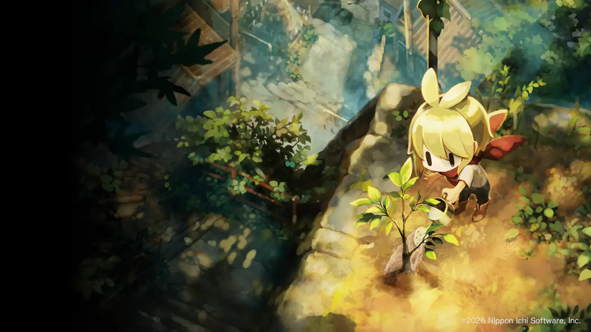

Discover
Genre: Life Simulation
Village in the Shade
Build a quiet life in Kagatsu, a hand-painted Japanese mountain village. Grow crops, raise livestock, and befriend residents—but be careful: the village has rules, and the night holds secrets.